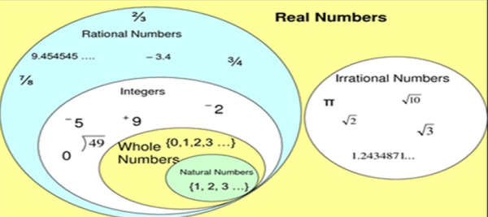
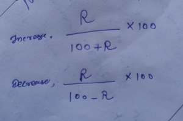
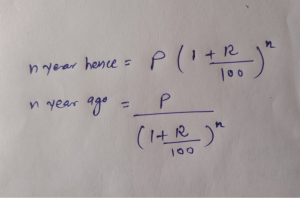
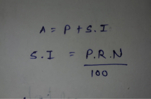
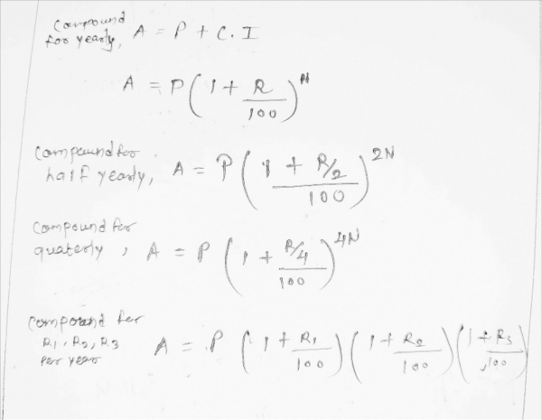
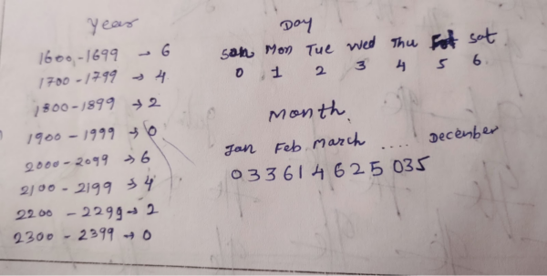
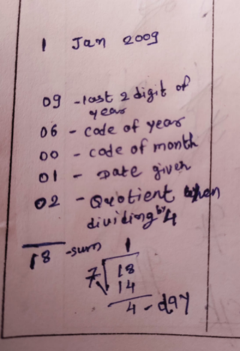

Aptitude
numbers
• prime number
: only divisible by themselve apart from 1
2,3,5,7,11,13....
• composite numbers
: non-prime number
4,6,8,9,10,12,14.......
Note
: 1 is not a prime number nor composite number
• To
find prime number
n
2 > p ,
find smallest n value
which satisfied the condition ,then number p is prime
if it not divisible by prime number smaller than n value
e.g 14 < root
(191
) below 191 not divisible by all prime number below 14
(2,3,5,7,11,13
) so its prime no.
• Perfect no
: sum of all the factors of number is itself number.
6 is perfect no , 1+2+3=6
• co-prime
: two number whose HCF is 1
(2,3
),
(8,9
)• Rational number
: p
/q
e.g 1
/3,1
/4,5
/7
• Irrational number
: not reapeat themselves
sq-root
(2
)• Divisibility
2
: if unit digit have 0,2,4,6,8
3
: if sum of all digits divisible by 3
4
: if last 2 digit are divisible by 4
5
: if unit digit have 0,5
8
:if
last 3 digit divisible by 8
9
: if sum of all digits divisible by 9
10
: if last digit have 0
11
: if (sum of digit at odd places
) -
(sum of digit at even places
) is 0 or divisible by 11
e.g 121 =
(1+1
) - 2 =0
16
: if last 4 digit are divisible by 16
25
: if last two digit are 25,50,75,00
(x^n - a^n
) divisible by
(x
-a) for all n
(x^n - a^n) divisible by (x-a) for all even value of n
(x^n + a^n) divisible by (x+a) for all odd value of n
Dividend = (Divisor * Quotient) + Reminder
19 =(9 * 2) + 1
• factorial , n!=n(n-1)(n-2)....
3!=3*2*1=6
• To find the largest 5 digit number divisible by n
assume largest 5 digit num : 99999
e.g n = 47
99999 / 47 = reminder 30
HCF & LCM
step1: determine prime factors
42 = 2 * 3 *7
126 = 2 * 3 * 3 * 7
140 = 2 * 2 * 5 * 7
step 2 : rearrange it in power
42 = 2 x 3 x 7
126 = 2 x 3^2 x 7
140 = 2^2 x 5 x 7
HCF : Highest common factor
pick common prime factors with lowest power
HCF = 2 x 7 = 14
LCM : least common multiplyer
pick unique prime factor with highest power
LCM = 2^2 x 3^2 x 5 x 7 = 1260
• For fraction value
2/3 , 8/9 , 16/81 , 10/27
HCF = HCF (numerator) / LCM (denomenator)
LCM = LCM (numerator) / HCF (denomenator)
#numerator
2 = 2
8 = 2 * 2 * 2 = 2^3
16 = 2 * 2 * 2 *2 = 2^4
10 = 2 * 5
HCF (2,8,16,10) = 2
LCM(2,8,16,10) = 2^4 * 5 = 80
#demomenator
3 = 3
9 = 3 * 3 = 3^2
81 = 3*3*3*3 = 3^4
27 = 3*3*3 = 3^3
HCF(3,9,81,27) = 3
LCM(3,9,81,27) = 3^4 = 81
HCF = 2/81
LCM = 80/3
• For decimal values : multiply with 10s so that we get natural number after calculating HCF & LCM for them ,now divide by 10s(base)
• product of numbers = product of HCF & LCM
• type6 :find the greatest 5 digit num divisible by 15,21,36
LCM(15,21,36) =1260
suppose greatest num is 99999 , reminder = 99999/1260 =459
real num = 99999-459 =99540
• type7: find the smallest 5 digit num divisible by 16,24,36,54
LCM(16,24,36,54) =432
suppose smallest num is 10000, reminder = 10000/432 = 64
real number = 10000+432-64 =10368
• type8:find the least number which wjen divided by 20,25,35,40 leaves reminder 14,19,29,34
calculate diff = (20-14) =(25-19) =(35-29) =(40-34) = 6
LCM(20,25,35,40) = 1400
real num = 1400 - 6 = 1396
Average
#Average
sum of first n number = n(n-1)/2
#type2 avg speed of train while reaching the station at x km/h and return with y km/h
avg speed = totaldistance /total time
avg speed = 2xy/x+y
Surds & indices
#Surds & indices
surds : irrational number ,represent in form of roots
incides : power of number
Percentage
#increasing or decreasing R% in value p,
(100 + R) % of p
(100 - R) % of p
e.g 50% of increasing in value 1000
final value = 150 % of 1000 = 1000x150/100 = 1500
• type2
: if price of good increase R % ,so to balance how much % of good consumption decrease.
(R/100+R)*100
(R/100-R)*100
e.g 25 % price of petrol increase ,
(25/125)*100 = 20% reduction in petrol consumption
•
type3 : if value increase at rate of R% then , n year hence & n year ago Ratio & proportion
Ratio= a:b
a:b != a/b
praportion
a : b = c : d
a/b = c/d
a,d = extreme term
b,c = means term
fourth praportion = a:b=c:d
e.g for (4,9,12)
4:9=12:d > d =12*9/4 = 27
Third praportion =a:b=b:c
mean praportion =root(ab) = _/ab
Duplicate ratio of (a:b) = a^2 : b^2
sub-duplicate ratio of (a:b) = root(a) : root(b)
Triplicate ratio of a:b = a^3 : b^3
sub-Triplicate ratio of a:b = 3root(a) : 3root(b)
A's quantity = total quantity * a/(a+b)
B's quantity = total quantity * b/(a+b)
pure quantity = x(1-y/x)^n
n= no of time impurities added
y = addition of quantity of impurity
x = total quantity
partnership
simple partnership
A:B => a:b
compound partnership
A:B => na : mb
pipe & cisterns
• if it takes n hr to filling the cistern,
after 1 hr how much cisten is filled = 1/n
after 2 hr how much cisten is filled = 2/n
same for emptying cistern
• type2, simulteneously filling by two pipe
A,B pipe alone fill the tank in 30,45 hr
filled tank , x/30 + x/45 =1time & work
• if it take n days to complete the work,
in 1 days, work done = 1/n
in 2 days ,work done = 2/n
• type2, simulteneously work done by two peeps
A,B individualy complete work in 5,6 days respectively
simulteneously , x/5 + x/6 =1
• type3, simulteneously work in hr
A complete work in 7 days by working 9 hr a day
B complete work in 6 days by working 7 hr a day
work done by A in 1 hr = 7*9 =63
work done by B in 1 hr = 6*7 =42
simulteneously in hr, x / 63 + x/42 =1
for given n hr in day = x/nBoat & stream
Downstream = along(same) direction of boat & stream
Upstream = against(opposite) direction of boat & stream
downstream speed = u + v = boat's speed + stream's speed
upstream = u - v = boat's speed - stream's speed
speed of boat in still water = 1/2 (x+y)
speed of stream = 1/2 (x-y)Trains
• if man running in same dirn of train ,
speed = train's speed - man's speed
• if man running in opposite dirn of train,
speed = train's speed + man's speed
1km/h = 1000/3600 m/s = 5/18 m/sAlligation & Mixture
Alligation is ratio to produce mixture from >2 ingridient
c = C.P of unit quantity of cheaper
d = C.P of unit quantity of dearer
m=mean price , C.P ofunit quantity of mixture
alligation = quantity of cheaper / quantity of dearer = (d-m)/(m-c)
assume C.P of unit quantity water = 0Simple & Compound interest
P = principle value ,
sum ,original value
R = rate of interest
N= time duration
• Simple interest
(S.I
)interested
in priciple value only
Total amount A = principle value P + simple interest S.I
• Compound interest
(C.I
)interested
in principle value
& interest
will give interest on interest of prev year
Total amout A =principle value P + compound interest C.I
Calender
•
memorized the codeExample:
Note : for leap year minus 1 from days we got.Clock
In 60 min, MH gain 55 min on HH
Opposite dirn = 30 min
Right angle = 15 min
HH takes 12 hr to complete 360*
MH takes 60 min (1hr) to complete 360*
1 min = 6*
1hr = 30*
idle time for MH & HH to come closer =654545 min
too fast = if it takes less time than idle
too slow = if it takes more time than idle time
To find the time to come MH & HH to right angle , opposite, same , 3 min apart
we know that it's take 60 min to gain 55 min leads
• Method :1
for meet same, initial 10 min lead
10 * 60/55
for right angle , we have to cover 15 min lead
condition:1 , MH before HH
so btwn 4-5 , lead we need to cover =(20-15) = 5
time = 5 * 60 / 55 past 4
condition:2 MH after HH
lead = 20 +15 = 35
time = 35 * 60 / 55
for opposite , we have to cover 30 min lead
btwn 8-9 , lead we need (30 -20) =10
time = 10 *60 / 55 past 8
for x min apart, we have to cover x min lead
for x min apart , (x =3 min )
condition:1
btwn 5-6 , lead = 25-3 =22
time = 22 * 60 /55
condition:2 MH after HH
lead = 25+3 = 28
time = 28 * 60 /55
• Method : 2
btwn 4-5 , right angle , opposit , x min apart
for same
20 + 5x/60 -x = 0
for right angle
20 + 5x/60 -x = 15
for opposite ,
20 + 5x/60 -x = 30
for Z min apaprt
20 + 5x/60 -x = ZPermutation & Combination
for a,b,c taking 2 at a time
permutation = arrangement = ab,ac,ba,bc,ca,cb
order matters
nPr = n!/(n-r)!
combination = selecting,choose = ab,bc,ca
order doesn't matter
nCr = n!/(n-r)! r!
nPn = n!
nCn =1